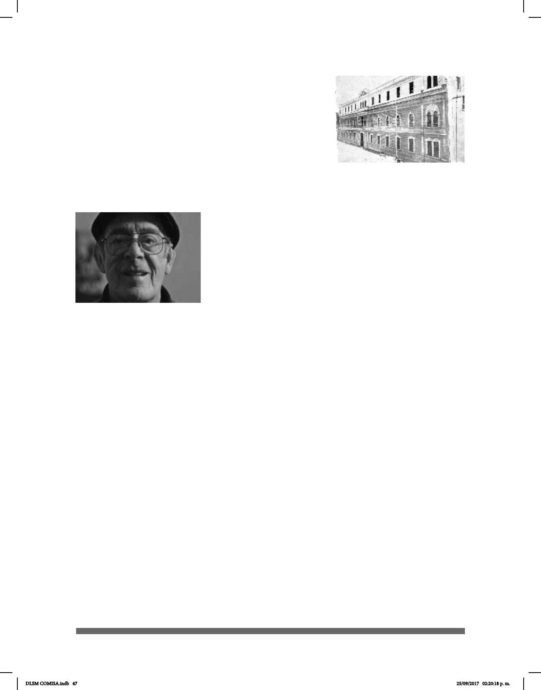

47
aprender otras cosas: aprendió lectura labio facial viendo
el lenguaje oral de la boca, aprendió a leer y escribir,
además de mímica y el alfabeto de manos. Fundó en
1931 la Asociación Deportiva Silente de México (ADSM),
el Club Eduardo Huet, la Asociación de Sordomudos con
alfabeto y en siglas de Huet, la Federación Mutualista
de Sordomudos y el Club Deportivo de Sordomudos
de México. Fue pionero del Periódico El Nacional en el
año 1932. En 1961, a los 54 años, se desempeñó como
presidente de la Asociación Mexicana de Sordomudos
y ocupó el puesto por
dos años. Realizó el Primer Diccionario Ilustrado para
Sordomudos y se le conoció también como un artista del
dibujo, pues fue caricaturista.
Otro gran personaje es Raúl Fuentes quien nació el 1
de diciembre de 1936 en el Distrito Federal. Estudió en
la Escuela Nacional de Sordos y durante su juventud se
convirtió en luchador profesional de lucha libre, su nombre
“El Prisionero”. Luchó a lado de grandes estrellas de la
época como El Santo, el Químico, la Momia, entre otros.
Se mantuvo activo en este trabajo de 1958 a 1977 y se retiró debido a problemas de
salud. Además de Fuentes Rivera había otros luchadores sordos: David Rodríguez
“Sordomudo Rodríguez”, Pedro Cervantes “Dientes de Sable”, Esteban Vilchis
“Príncipe Azteca”, Arturo Quiroz “Sordomudo Quiroz” y Francisco González “Sordomudo
González”. Fuentes Rivera fue uno de los principales artistas sordos de nuestro país. Él
tuvo la idea de enseñar LSM de manera artística expresada con sus manos combinando
el deletreo manual, la expresión facial y corporal, la mímica y las señas. De esta forma
también promovió la poesía en LSM. Con respecto a su trayectoria en el mundo del
teatro, se debe mencionar que obtuvo el segundo lugar en el Festival de Teatro en
Oslo, Noruega. Además, fue pionero en la formación de grupos de teatro para Sordos y
presentó la exitosa obra Mundo de silencio en el Teatro Hidalgo en 1972. Es reconocido
en toda la República, ya que su trabajo como autor de varios libros de señas ha sido
sobresaliente: fue creador de aproximadamente veinte señas utilizadas en la actualidad
en la LSM. Además, creó y editó la primera revista para el público sordo: Grupo buena
voluntad. Escribió:
No nos admire por qué hablamos con señas. Es que no tenemos otro medio de
comunicación. Fuimos a la escuela y sabemos leer y escribir. Hay otros que solo
son tarta- mudos, etc. Pero todos somos iguales, nosotros tenemos otros sentidos
más desarro- llados que ustedes. Cuando nos reímos no nos reímos de las personas
extrañas, sino de nuestros propios chistes y comentarios, y debemos respetarnos unos
a los otros. Sobre todo las personas decentes como creo que usted lo es. Hacemos
Nueva Escuela de Ciegos y
Sordomudos de la Benecencia
Pública
Raúl Fuentes Rivera
DLSM COMISA.indb 47 25/09/2017 02:20:18 p. m.